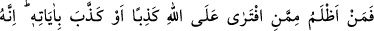
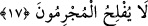

Kalem sürdü kâf ve nûn kağıdına
Yazısız ve kağıtsız ezel ve ebed ilminden
Kalem ve Levh’in müşkillerini halleyledi
“Hâlâ düşünmüyor musunuz?” Onun sadece Allah katından olduğunu bilmek için
tedebbür ve tefekkür ile hâlâ aklınızı kullanmıyor musunuz?
17. Allah’a karşı yalan uydurandan veya O’nun âyetlerini yalanlayandan daha
zâlim kim olabilir? Şüphesiz mücrimler asla iflâh olmazlar.
“Allah’a karşı yalan uydurandan veya O’nun âyetlerini yalanlayandan” inkar
edenden “daha zâlim kim olabilir?”
Bu ifâde, kinâye yoluyla Peygamber (s.a.)’i onların isnad ettikleri şeyden uzak tutmak
içindir. Bu isnâd, Hz. Peygamber (a.s.)’ın bu Kur’an’ı kendiliğinden tertip ettiği, sonra
da iftirâ ederek onun Allah katından olduğunu söylediği iddiasıdır. Çünkü onların
“Bundan başka bir Kur’an getir veya bunu değiştir.” demeleri işte bu iddiadan
kinayedir. Hz. Peygamber (s.a.)’in “Allah’a karşı yalan uydurandan veya onun
âyetlerini yalanlayandan daha zâlim kim olabilir?” sözü de onun tarafından söylenmiş
bir kinayedir. Sanki şöyle denilmiştir: “Şu Kur’an, iddia ettiğiniz gibi Allah katından
olmasaydı, dünyada hiç kimse Allah’a iftira etme bakımından benden daha zâlim
olamazdı. Lâkin durum böyle değildir. Aksine o, ilâhî bir vahiydir.”
“Şüphesiz suçlular asla onmazlar.” Onlar ne kaçılacak şeyden kurtulurlar ve ne de
istediklerini elde edebilirler.
et-Te’vîlâtü’n-Necmiyye’de şöyle denilir: “Yalancılar ve yalanlayanlar, inkârdan,
nefsânî hevâ engellerinden, uzaklık azâbından ve nefis cehenneminden kurtulamazlar.”
Bunun sebebi, yolun sıdk ve ihlâs yolu olması, yalan ve riyâ yolu olmamasıdır. Kim
doğruluk yoluna girerse felâh bulur, kurtulur ve vuslata erer. Kim de yalan yoluna
girerse ziyan eder, helâk olur ve sapıtır.
Ebü’l-Kâsım Fakîh’in şöyle dediği rivâyet edilmiştir: “Âlimler üç haslet üzerinde
ittifak etmişlerdir. Bu hasletler doğru düzgün olduğu zaman kurtuluşa sebebtir. Bu üçü
ancak birbiriyle tamam olur. Onlar: Zulümden uzak olan müslümanlık, temiz gıda,
amellerde Allah için sıdk/doğruluktur.
Bir hadiste şöyle buyrulmuştur: “Şu üç şey en büyük iftiralardandır: Bir adamın
gözlerine iftirasıdır: (Rüyasında bir şey) görmediği halde gördüm der. Yahut anasına
babasına iftirasıdır: Babasından başkasının babası olduğunu iddiâ eder. Yahut bana
iftirasıdır: Benden işitmediği halde Rasûlullah’dan (hadis) işittim der.”[31]